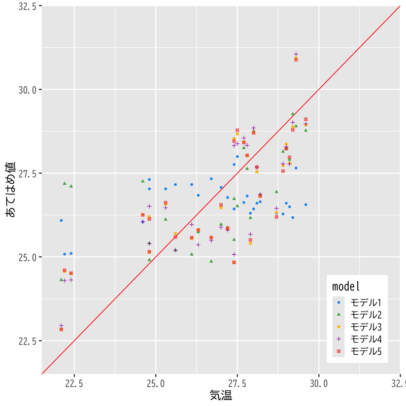

モデルの評価
(Press ? for help, n and p for next and previous slide)
村田 昇
2020.10.20
回帰係数 \(\beta_0,\beta_1,\dotsc,\beta_p\) を用いた一次式:
\begin{equation} y=\beta_0+\beta_1x_1+\dotsb+\beta_px_p \end{equation}
誤差項 を含む確率モデルで観測データを表現:
\begin{equation} y_i=\beta_0+\beta_1 x_{i1}+\cdots+\beta_px_{ip}+\epsilon_i \quad (i=1,\dotsc,n) \end{equation}
デザイン行列:
\begin{equation} X= \begin{pmatrix} 1 & x_{11} & x_{12} & \cdots & x_{1p} \\ 1 & x_{21} & x_{22} & \cdots & x_{2p} \\ \vdots & \vdots & \vdots & & \vdots \\ 1 & x_{n1} & x_{n2} & \cdots & x_{np} \end{pmatrix} \end{equation}
ベクトル:
\begin{equation} \boldsymbol{y}= \begin{pmatrix} y_1 \\ y_2 \\ \vdots \\ y_n \end{pmatrix},\quad \boldsymbol{\epsilon}= \begin{pmatrix} \epsilon_1 \\ \epsilon_2 \\ \vdots \\ \epsilon_n \end{pmatrix},\quad \boldsymbol{\beta}= \begin{pmatrix} \beta_0 \\ \beta_1 \\ \vdots \\ \beta_p \end{pmatrix} \end{equation}
確率モデル:
\begin{equation} \boldsymbol{y} =X\boldsymbol{\beta}+\boldsymbol{\epsilon} \end{equation}
回帰式の評価: 残差平方和 の最小化による推定
\begin{equation} S(\boldsymbol{\beta}) =(\boldsymbol{y}-X\boldsymbol{\beta})^{\mathsf{T}} (\boldsymbol{y}-X\boldsymbol{\beta}) \end{equation}
解の条件: 正規方程式
\begin{equation} X^{\mathsf{T}}X\boldsymbol{\beta} =X^{\mathsf{T}}\boldsymbol{y} \end{equation}
解の一意性: Gram 行列 \(X^{\mathsf{T}}X\) が正則
\begin{equation} \boldsymbol{\hat{\beta}} = (X^{\mathsf{T}}X)^{-1} X^{\mathsf{T}}\boldsymbol{y} \end{equation}
残差 \(\boldsymbol{\hat{\epsilon}}=\boldsymbol{y}-\boldsymbol{\hat{y}}\) はあてはめ値 \(\boldsymbol{\hat{y}}\) と直交
\begin{equation} \boldsymbol{\hat{\epsilon}}^{\mathsf{T}}\boldsymbol{\hat{y}} =0 \end{equation}
回帰式は説明変数と目的変数の 標本平均 を通過
\begin{equation} \bar{y} = (1,\bar{\boldsymbol{x}}^{\mathsf{T}})\boldsymbol{\hat{\beta}}, \quad \bar{\boldsymbol{x}} =\frac{1}{n}\sum_{i=1}^n\boldsymbol{x}_i, \quad \bar{y} =\frac{1}{n}\sum_{i=1}^ny_i, \end{equation}
決定係数 (R-squared):
\begin{equation} R^2 = 1-\frac{\sum_{i=1}^n\hat{\epsilon}_i^2}{\sum_{i=1}^n(y_i-\bar{y})^2} \end{equation}
自由度調整済み決定係数 (adjusted R-squared):
\begin{equation} \bar{R}^2 = 1-\frac{\frac{1}{n{-}p{-}1}\sum_{i=1}^n\hat{\epsilon}_i^2} {\frac{1}{n{-}1}\sum_{i=1}^n(y_i-\bar{y})^2} \end{equation}(不偏分散で補正)
あてはめ値のさまざまな表現:
\begin{align} \boldsymbol{\hat{y}} &=X\boldsymbol{\hat{\beta}}\\ &\qquad(\boldsymbol{\hat{\beta}}=(X^{\mathsf{T}}X)^{-1}X^{\mathsf{T}}\boldsymbol{y}を代入)\\ &=X(X^{\mathsf{T}}X)^{-1}X^{\mathsf{T}}\boldsymbol{y} && (A) \\ &\qquad(\boldsymbol{y}=X\boldsymbol{\beta}+\boldsymbol{\epsilon}を代入)\\ &=X(X^{\mathsf{T}}X)^{-1}X^{\mathsf{T}}X\boldsymbol{\beta} +X(X^{\mathsf{T}}X)^{-1}X^{\mathsf{T}}\boldsymbol{\epsilon}\\ &=X\boldsymbol{\beta} +X(X^{\mathsf{T}}X)^{-1}X^{\mathsf{T}}\boldsymbol{\epsilon} && (B) \\ \end{align}
残差と誤差の関係:
\begin{align} \boldsymbol{\hat{\epsilon}} &=\boldsymbol{y}-\boldsymbol{\hat{y}}\\ &=\boldsymbol{\epsilon} -X(X^{\mathsf{T}}X)^{-1}X^{\mathsf{T}} \boldsymbol{\epsilon}\\ &=\bigl(I -X(X^{\mathsf{T}}X)^{-1}X^{\mathsf{T}} \bigr) \boldsymbol{\epsilon} && (A) \\ \end{align}
定義:
\begin{equation} H= X(X^{\mathsf{T}}X)^{-1}X^{\mathsf{T}} \end{equation}
ハット行列 \(H\) による表現:
\begin{align} \boldsymbol{\hat{y}} &=H\boldsymbol{y}\\ \boldsymbol{\hat{\epsilon}} &=(I-H)\boldsymbol{\epsilon} \end{align}
対角成分 (テコ比; leverage) は観測データが自身の予測に及ぼす影響の度合を表す
\begin{equation} \hat{y}_{j} = (H)_{jj}y_{j} + \text{(それ以外のデータの寄与)} \end{equation}但し \((A)_{ij}\) は行列 \(A\) の \((i,j)\) 成分
\(H\) は羃等である．
\begin{equation} H^{2}=H,\quad (I-H)^{2}=I-H \end{equation}
以下の等式が成り立つ．
\begin{equation} HX=X,\quad X^{\mathsf{T}}H=X^{\mathsf{T}} \end{equation}
推定量と誤差の関係:
\begin{align} \boldsymbol{\hat{\beta}} &=(X^{\mathsf{T}}X)^{-1}X^{\mathsf{T}}\boldsymbol{y}\\ &\qquad( \boldsymbol{y}=X\boldsymbol{\beta}+\boldsymbol{\epsilon} を代入) \\ &=(X^{\mathsf{T}}X)^{-1}X^{\mathsf{T}}X\boldsymbol{\beta} +(X^{\mathsf{T}}X)^{-1}X^{\mathsf{T}}\boldsymbol{\epsilon}\\ &=\boldsymbol{\beta} +(X^{\mathsf{T}}X)^{-1}X^{\mathsf{T}}\boldsymbol{\epsilon} \end{align}
正規分布の重要な性質:
正規分布に従う独立な確率変数の和は正規分布に従う
推定量は以下の多変量正規分布に従う
\begin{align} \mathbb{E}[\boldsymbol{\hat{\beta}}] &=\boldsymbol{\beta}\\ \mathrm{Cov}(\boldsymbol{\hat{\beta}}) &=\sigma^{2}(X^{\mathsf{T}}X)^{-1} \end{align}\begin{equation} \boldsymbol{\hat{\beta}} \sim \mathcal{N}(\boldsymbol{\beta},\sigma^{2}(X^{\mathsf{T}}X)^{-1}) \end{equation}
\(\boldsymbol{\hat{\beta}}\) の分布:
\begin{equation} \boldsymbol{\hat{\beta}} \sim \mathcal{N}(\boldsymbol{\beta},\sigma^{2}(X^{\mathsf{T}}X)^{-1}) \end{equation}\(p+1\) 変量正規分布
\(\hat{\beta}_j\) の分布:
\begin{equation} \hat{\beta}_{j} \sim \mathcal{N}(\beta_{j},\sigma^{2}((X^{\mathsf{T}}X)^{-1})_{jj}) =\mathcal{N}(\beta_{j},\sigma^{2}\xi_{j}) \end{equation}\((A)_{jj}\) は 行列 \(A\) の \((j,j)\) (対角)成分
標準誤差 (standard error): \(\hat{\beta}_j\) の標準偏差の推定量
\begin{equation} \hat{\sigma}\sqrt{\xi}_j = \sqrt{\frac{1}{n{-}p{-}1}\sum_{i=1}^n\hat{\epsilon}_i^2} \cdot \sqrt{((X^{\mathsf{T}}X)^{-1})_{jj}} \end{equation}
不偏分散 \(\hat{\sigma}^{2}\) が 母数 \(\sigma^{2}\) の不偏な推定量となることを示しなさい．
以下を示せばよい
\begin{equation} \mathbb{E}\left[\sum_{i=1}^{n}\hat{\epsilon}_{i}^{2}\right] =(n-p-1)\sigma^{2} \end{equation}
回帰係数の分布に関する定理:
\begin{equation} \text{(t-統計量)}\quad t=\frac{\hat{\beta}_j-\beta_j}{\hat{\sigma}\sqrt{\xi_j}} \end{equation}\(t\)-統計量 は自由度 \(n{-}p{-}1\) の \(t\) 分布に従う
\(p\)-値: 確率変数の絶対値が \(|t|\) を超える確率
\begin{equation} \text{($p$-値)} = 2\int_{|t|}^\infty f(x)dx \quad\text{(両側検定)} \end{equation}\(f(x)\) は自由度 \(n{-}p{-}1\) の \(t\) 分布の確率密度関数
ばらつきの比に関する定理:
\begin{equation} \text{(F-統計量)}\quad F= \frac{\frac{1}{p}S_{r}}{\frac{1}{n{-}p{-}1}S} % =\frac{\frac{1}{p}\sum_{i=1}^n(\hat{y}_i-\bar{y})^2} % {\frac{1}{n{-}p{-}1}\sum_{i=1}^n(y_i-\hat{y}_i)^2} =\frac{n{-}p{-}1}{p}\frac{R^2}{1-R^2} \end{equation}\(\beta_1=\dotsb=\beta_p=0\) ならば， \(F\)-統計量 は自由度 \(p,n{-}p{-}1\) の \(F\) 分布に従う
\(p\)-値: 確率変数の値が \(F\) を超える確率
\begin{equation} \text{($p$-値)} = \int_{F}^\infty f(x)dx \quad\text{(片側検定)} \end{equation}\(f(x)\) は自由度 \(p,n{-}p{-}1\) の \(F\) 分布の確率密度関数
気候 (気温,降雨,日射,降雪,風速,気圧,湿度,雲量)
に関するデータ(の一部)
date temp rain solar snow wind press humid cloud 213 2019/8/1 30.5 0.0 20.55 0 2.5 1008.5 80 1.8 214 2019/8/2 30.2 0.0 20.24 0 2.7 1008.4 80 2.8 215 2019/8/3 29.4 0.0 25.03 0 2.9 1008.7 78 1.0 216 2019/8/4 29.4 0.0 24.62 0 2.8 1009.5 76 3.0 217 2019/8/5 29.8 0.0 26.72 0 3.0 1009.5 75 2.8 218 2019/8/6 30.3 0.0 24.18 0 3.8 1008.4 76 7.5 219 2019/8/7 30.4 0.0 24.10 0 3.1 1007.4 74 6.5 220 2019/8/8 29.9 0.0 22.46 0 2.8 1006.6 78 4.3 221 2019/8/9 30.1 0.0 25.10 0 3.3 1005.5 74 6.5 222 2019/8/10 29.6 0.0 22.69 0 3.2 1005.4 76 4.3 223 2019/8/11 29.4 0.0 23.77 0 2.8 1005.9 76 6.0 224 2019/8/12 28.8 0.5 17.16 0 2.6 1005.7 81 10.0 225 2019/8/13 29.3 0.0 15.57 0 2.6 1003.8 83 6.8 226 2019/8/14 29.2 8.5 15.38 0 3.8 1003.4 85 9.0
観測値とあてはめ値の比較

Figure 1: モデルの比較
モデル1: 係数とモデルの評価
Call:
lm(formula = TW.model1, data = TW.subset, y = TRUE)
Residuals:
Min 1Q Median 3Q Max
-2.9372 -1.5395 0.3867 1.4446 2.3344
Coefficients:
Estimate Std. Error t value Pr(>|t|)
(Intercept) 117.37523 95.88549 1.224 0.231
press -0.08846 0.09532 -0.928 0.361
Residual standard error: 1.774 on 29 degrees of freedom
Multiple R-squared: 0.02884, Adjusted R-squared: -0.004651
F-statistic: 0.8611 on 1 and 29 DF, p-value: 0.3611
モデル2: 係数とモデルの評価
Call:
lm(formula = TW.model2, data = TW.subset, y = TRUE)
Residuals:
Min 1Q Median 3Q Max
-3.6477 -0.3836 0.0493 0.5511 1.8650
Coefficients:
Estimate Std. Error t value Pr(>|t|)
(Intercept) 197.29993 61.11379 3.228 0.00317 **
press -0.17149 0.06086 -2.818 0.00877 **
solar 0.20863 0.03072 6.792 2.23e-07 ***
---
Signif. codes: 0 ‘***’ 0.001 ‘**’ 0.01 ‘*’ 0.05 ‘.’ 0.1 ‘ ’ 1
Residual standard error: 1.11 on 28 degrees of freedom
Multiple R-squared: 0.6332, Adjusted R-squared: 0.607
F-statistic: 24.17 on 2 and 28 DF, p-value: 7.977e-07
モデル3: 係数とモデルの評価
Call:
lm(formula = TW.model3, data = TW.subset, y = TRUE)
Residuals:
Min 1Q Median 3Q Max
-3.6475 -0.3836 0.0494 0.5510 1.8652
Coefficients:
Estimate Std. Error t value Pr(>|t|)
(Intercept) 1.973e+02 6.259e+01 3.152 0.00394 **
press -1.715e-01 6.330e-02 -2.709 0.01158 *
solar 2.085e-01 6.012e-02 3.469 0.00177 **
humid -1.097e-04 6.796e-02 -0.002 0.99872
---
Signif. codes: 0 ‘***’ 0.001 ‘**’ 0.01 ‘*’ 0.05 ‘.’ 0.1 ‘ ’ 1
Residual standard error: 1.13 on 27 degrees of freedom
Multiple R-squared: 0.6332, Adjusted R-squared: 0.5925
F-statistic: 15.54 on 3 and 27 DF, p-value: 4.553e-06
モデル4: 係数とモデルの評価
Call:
lm(formula = TW.model4, data = TW.subset, y = TRUE)
Residuals:
Min 1Q Median 3Q Max
-3.4490 -0.4580 -0.0780 0.7019 1.7003
Coefficients:
Estimate Std. Error t value Pr(>|t|)
(Intercept) 198.22420 60.53758 3.274 0.002902 **
press -0.17082 0.06028 -2.834 0.008602 **
solar 0.16740 0.04505 3.716 0.000934 ***
cloud -0.12979 0.10459 -1.241 0.225311
---
Signif. codes: 0 ‘***’ 0.001 ‘**’ 0.01 ‘*’ 0.05 ‘.’ 0.1 ‘ ’ 1
Residual standard error: 1.099 on 27 degrees of freedom
Multiple R-squared: 0.653, Adjusted R-squared: 0.6144
F-statistic: 16.94 on 3 and 27 DF, p-value: 2.183e-06
決定係数と\(F\)-統計量
[1] "R2: 0.0288 ; adj. R2: -0.00465 ; F-statistic: 0.861"
[1] "R2: 0.633 ; adj. R2: 0.607 ; F-statistic: 24.2"
[1] "R2: 0.633 ; adj. R2: 0.592 ; F-statistic: 15.5"
[1] "R2: 0.653 ; adj. R2: 0.614 ; F-statistic: 16.9"